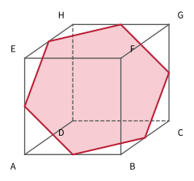

別冊練習問題 7 の解答 立方体の切断面（正六角形）
(1) 1辺の長さが \(6\) の立方体 \(ABCD\text{-}EFGH\) を、辺 \(BC,\ CG,\ GH,\ HE,\ EA,\ AB\) の中点を通る平面で切る。切り口の面積を求めよ。
切断面の形
1辺 \(6\) の立方体を、辺の中点6つを通る平面で切る。切り口の各辺は面の対角線の半分なので、等しい長さ。

辺の長さ
\[\text{1辺}=\dfrac12\cdot6 \sqrt{2}=3 \sqrt{2}\]面積
切り口は正六角形（1辺 \(3 \sqrt{2}\)）。正三角形6個分。
\[S=6\cdot\dfrac{\sqrt3}{4}\left(3 \sqrt{2}\right)^2=27 \sqrt{3}\]【答案】
\[27 \sqrt{3}\]答
(2) 1辺の長さが \(2\) の立方体 \(ABCD\text{-}EFGH\) を、辺 \(BC,\ CG,\ GH,\ HE,\ EA,\ AB\) の中点を通る平面で切る。切り口の面積を求めよ。
切断面の形
1辺 \(2\) の立方体を、辺の中点6つを通る平面で切る。切り口の各辺は面の対角線の半分なので、等しい長さ。
辺の長さ
\[\text{1辺}=\dfrac12\cdot2 \sqrt{2}=\sqrt{2}\]面積
切り口は正六角形（1辺 \(\sqrt{2}\)）。正三角形6個分。
\[S=6\cdot\dfrac{\sqrt3}{4}\left(\sqrt{2}\right)^2=3 \sqrt{3}\]【答案】
\[3 \sqrt{3}\]答
(3) 1辺の長さが \(8\) の立方体 \(ABCD\text{-}EFGH\) を、辺 \(BC,\ CG,\ GH,\ HE,\ EA,\ AB\) の中点を通る平面で切る。切り口の面積を求めよ。
切断面の形
1辺 \(8\) の立方体を、辺の中点6つを通る平面で切る。切り口の各辺は面の対角線の半分なので、等しい長さ。
辺の長さ
\[\text{1辺}=\dfrac12\cdot8 \sqrt{2}=4 \sqrt{2}\]面積
切り口は正六角形（1辺 \(4 \sqrt{2}\)）。正三角形6個分。
\[S=6\cdot\dfrac{\sqrt3}{4}\left(4 \sqrt{2}\right)^2=48 \sqrt{3}\]【答案】
\[48 \sqrt{3}\]答